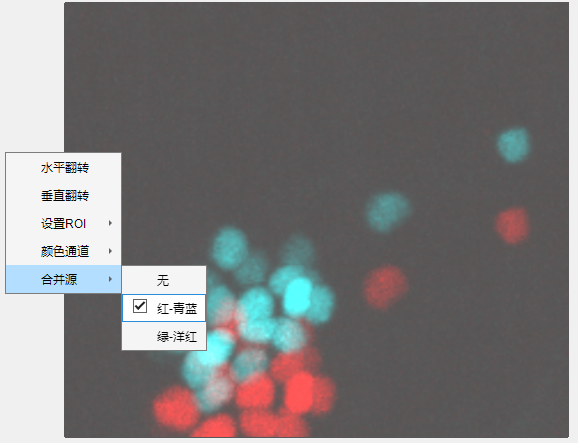
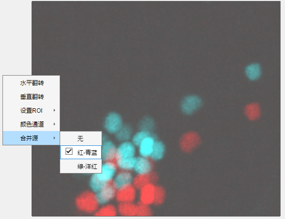

3.2.5 合并通道
 合并源用于当前通道配准程度可视化，即将原始数据与配准结果合并在同一幅图像。合并模式可选无，红—青蓝，绿—洋红。 所有合并模式对应颜色均为原始帧—配准帧。例如红—青蓝，红色对应原始数据，青蓝色对应配准后数据。

合并源用于当前通道配准程度可视化，即将原始数据与配准结果合并在同一幅图像。合并模式可选无，红—青蓝，绿—洋红。
所有合并模式对应颜色均为原始帧—配准帧。例如红—青蓝，红色对应原始数据，青蓝色对应配准后数据。